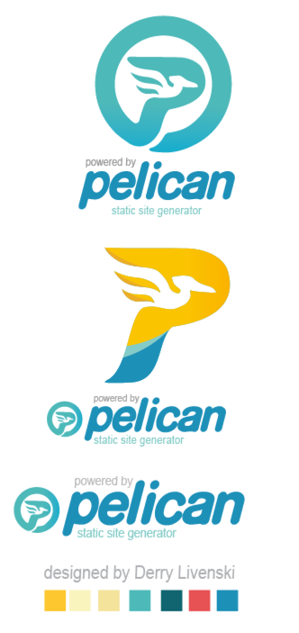

Prueba de funcionamiento integración continua
Prueba de integración continua
prueba de funcionamiento
probando script

probando script x2
more ...
Prueba de funcionamiento nº 2
Ésto es una segunda página para la prueba de funcionamiento de pelican
Vamos a probar el uso de listas en Markdown
Lista ordenada
- Hola
- Que
- Tal
Lista desordenada
- Hola
- Que
- Tal
Tercera página de prueba de pelican
Última página de prueba para comprobar que pelican funciona correctamente
Párrafos
Para crear párrafos dejaremos una linea en blanco de por medio
Así se crean párrafos en Markdown